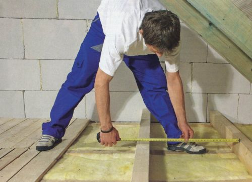
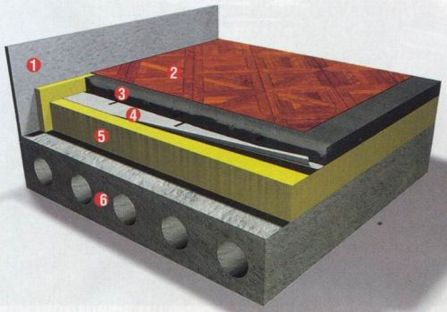
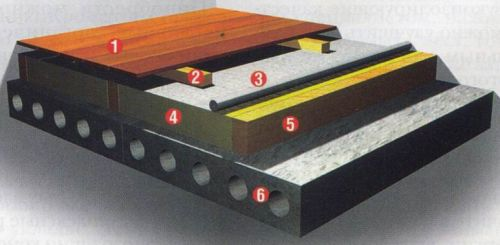
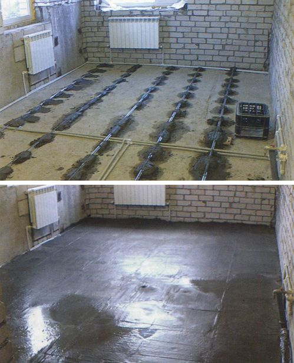
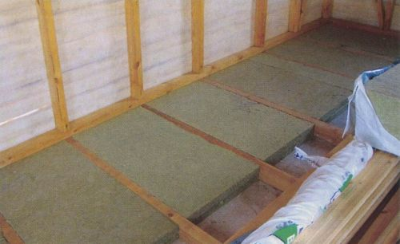
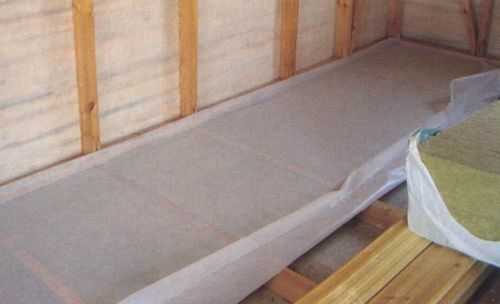
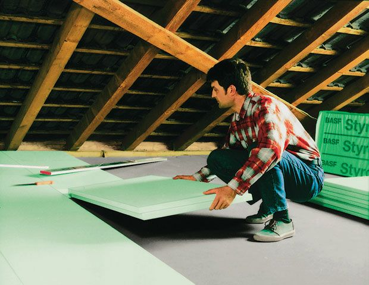
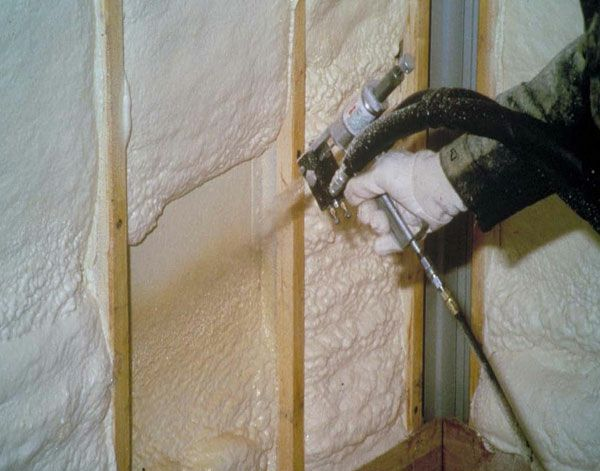
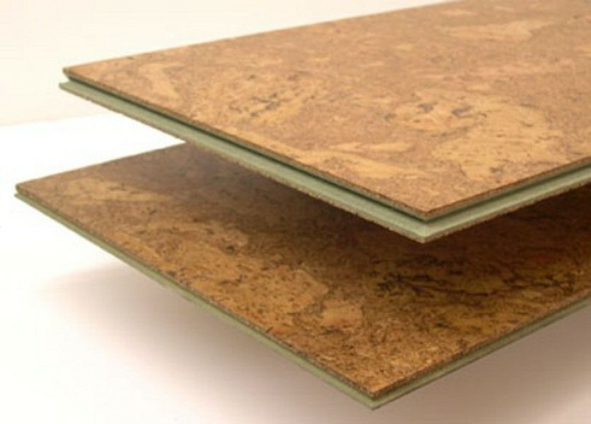

Теплоизоляция ( утепление ) пола


Свой дом — свой мир. Это пространство должно быть комфортным и уютным, защищенным от внешних неблагоприятных воздействий, а значит- утепленным. Качественная теплоизоляция помещений — одно из главных условий хорошего микроклимата в доме.
Теплоизоляция тем более важна, что для борьбы с холодом придумано много разных обогревателей — начиная от костра в пещере и заканчивая атомной электростанцией. А ведь чтобы согреть жилище, не обязательно использовать мощные отопительные приборы, можно научиться не терять накопленного тепла, изолировав дом от холода. Теплоизоляция должна обеспечить определенный температурный режим в помещении, а именно комнатную температуру, то есть определенный диапазон, комфортный для жизнедеятельности человека. Для каждого из нас можно определить и верхнее, и нижнее значение этого параметра, но оптимальной температурой считается диапазон 18-22°С.
Общие требования теплоизоляции
Теплоизоляция — это комплекс мер по защите зданий от нежелательного теплообмена с окружающей средой. Главный путь снижения теплопотерь — повышение термического сопротивления ограждающих конструкций с помощью теплоизоляционных материалов.
Основные показатели таких материалов: теплопроводность, звукоизоляционные характеристики, пожарная безопасность, прочность на сжатие; влажность и водопоглощение; паро- и воздухопроницаемость, огнестойкость. Наиболее важный показатель — коэффициент теплопроводности; чем он меньше, тем лучше теплоизоляционные качества материала. Величина эта непостоянная, она может меняться при различных режимах эксплуатации.
Теплоизоляция помещений несет ряд преимуществ. В частности, комнаты дома обретают стабильный микроклимат с устойчивой температурой и влажностью, не промерзая в суровые морозы и не перегреваясь в знойную жару. Кроме того, мероприятия по теплоизоляции, как уже было сказано выше, приводят к уменьшению затрат на отопление. А это, в свою очередь, уменьшает затраты природных ресурсов и выбросы вредных веществ, — в наше время модно заботиться об экологии, но это тот случай, когда стоит следовать моде. Да и жизнь в утепленном, но проветриваемом помещении полезнее для здоровья. Отметим, что теплоизоляционные мероприятия значительно увеличивают срок эксплуатации строительных конструкций.
Зачем нужна теплоизоляция полов
Сначала уточним, что пол — это строительная конструкция, на которой осуществляется жизнедеятельность людей и от состояния которой в значительной степени зависит здоровье людей и качество производимой продукции. Полы играют серьезную роль в сохранении тепла внутри зданий, и без их теплоизоляции потери тепла в доме могут достигать пятой части от общего объема теплопотерь.
Утепленные полы не просто сохраняют тепло и снижают затраты на отопление, но и обеспечивают комфортное проживание человека. Тем более что теплый пол наиболее приемлем. Всем известна давняя поговорка: «держи голову в холоде, а ноги в тепле».

1. Стена. 2. Напольное покрытие. 3. Цементная стяжка. 4. Гидроизоляционный слой. 5. Теплоизоляция. 6. Несущее железобетонное перекрытие, гравийная подготовка
Следует учитывать, что материалы, применяемые для теплоизоляции пола, подвергаются воздействию повышенных нагрузок. В силу этого среди предъявляемых к ним требований в первую очередь нужно назвать высокую прочность на сжатие и малую степень деформации при сжатии. Другими важными характеристиками теплоизоляционного материала, позволяющими уменьшить до минимума толщину строительных конструкций, являются низкая теплопроводность и способность сохранять теплоизолирующие качества в течение практически неограниченного времени даже при воздействии влаги и механических нагрузок. Теплоизоляционный материал должен быть удобным в работе, то есть обладать легкостью резки, простотой и скоростью укладки с небольшим количеством отходов. Это сводит к минимуму стоимость работ по теплоизоляции.

1. Напольное покрытие. 2. Обрешетка. 3. Гидроизоляция. 4. Теплоизоляция. 5. Лаги. 6. Несущее железобетонное перекрытие, гравийная подготовка
Укладку теплоизоляции, особенно для пола, расположенного над холодным или относительно холодным помещением, например над подвалом или около внешней стены здания, лучше производить с нижней стороны перекрытия. Тогда уложенный на холодной стороне материал предотвратит образование конденсата и снизит резкие смены температуры внутри здания. Если же это сделать не получается, то слой утепления укладывается по верхней стороне перекрытия, а звукоизолирующие качества можно улучшить дополнительным слоем того же или другого материала.
Эффективно и утепление пола при монтаже систем водяного или кабельного обогрева, то есть «теплого пола». Без теплоизоляции значительная часть тепловой энергии, выделяемой нагревательными элементами «теплого пола», теряется сквозь межэтажные перекрытия. А применение теплоизоляции позволяет практически всю энергию расходовать по прямому назначению.

Системы теплого пола требуют выравнивания поверхности и теплоизоляции от перекрытия, чтобы тепловая энергия не терялась
Теплоизоляционные материалы
Рынок теплоизоляционных материалов разнообразен и масштабен, что связано в первую очередь с большим спросом как для нового строительства, так и для ремонта и реконструкции существующего жилья. Способствуют интересу к теплоизоляции и стремительно растущие цены на энергоносители.
Приобрести можно минеральные, органические и пробковые материалы, изготовленные как мировыми, так и отечественными производителями. Предлагаются как отдельные материалы, рассчитанные на теплоизоляцию строительных элементов, так и комплексные решения теплоизоляции конструкций и зданий в целом.
Спектр материалов для теплоизоляции полов, широк. Это минеральная вата на основе базальта и стекловолокна, пенополистирол, пенополиуретан, пробка. Для каждого из этих материалов производители разработали конструктивные схемы устройства полов.
Минеральная вата
Минеральная вата выпускается на каменной или стекловолокнистой основе. «Каменная» минвата отличается высокой тепло- и звукоизолирующей способностью, хорошими водоотталкивающими свойствами и огнестойкостью, сопротивляемостью механическим воздействиям. Для утепления полов минеральная вата выпускается в виде гибкого мата или твердой плиты.
Гибкий мат изготавливают из гидрофобизированной минеральной ваты, покрывая мат с одной стороны перфорированной крафт-бумагой; укладывать материал нужно так, чтобы покрытая крафт-бумагой сторона (кашированная) была направлена в сторону утепляемого помещения, то есть вверх.
Плиты чаще всего применяются для утепления полов первых этажей в помещениях без подвалов. Их также изготавливают из гидрофобизированной минваты, а сторону, обладающую большей жесткостью, маркируют синей полосой. При укладке плит сторона, отмеченная синей полосой, должна находиться сверху. Отличительная особенность минеральной ваты — не только высокое термическое сопротивление, но и хорошая звукоизолирующая способность.
Стеклянная вата представляет собой минеральное волокно, для производства которого используется то же сырье, что и для производства обычного стекла, или же отходы стекольной промышленности. Изделия из стекловаты обладают повышенной упругостью и прочностью, вибростойкостью, поэтому также являются очень хорошими звукоизоляторами. Кроме того, они негорючи и экологичны. Из стекловаты выпускаются плиты, полужесткие или жесткие, а также маты.
Уложенные на напольное основание плиты или маты из минеральной ваты следует гидроизолировать, желательно укрепить армирующим слоем, а затем уже укладывать финишное покрытие.

Плиты из минеральной ваты укладываются между лаг перекрытия

А затем накрываются сверху пароизоляцией с загибом на стены
Пенополистирол
Этот материал для теплоизоляции известен и применяется давно, но сейчас это уже другой, серьезно усовершенствованный материал. Он бывает экструдированный и вспененный пенополистирол, наиболее перспективным можно назвать первый вариант. Благодаря закрытоячеистой структуре этот материал имеет продолжительный срок службы и обеспечивает эффективное и экономичное решение проблемы теплоизоляции полов.
Обладая данной структурой, плиты из экструдированного пенополистирола не впитывают влаги и имеют очень высокую прочность на изгиб и сжатие. Поэтому их можно укладывать под гидроизоляционные мембраны на жесткое основание из крупного щебня, с выравнивающим слоем из песка, обеспечивая в такой структуре теплоизоляцию подвала здания. Для теплоизоляции первого этажа лучше всего укладывать пено- полистирольные плиты под конструкции пола. Находясь на холодной стороне, теплоизоляция устраняет образование конденсата, повышает степень использования теплоемкости перекрытий пола и снижает резкие смены температуры внутри дома. Если же невозможна укладка теплоизоляционного слоя на нижней стороне полов промежуточных этажей, то теплоизоляция помещается сверху.
Также плиты из экструдированного пенополистирола могут закладываться в опалубку, поскольку благодаря своей рифленой поверхности они обладают высокой степенью адгезии (сцепления) к бетону. Если бетон достаточно хорошо уплотнен, сила адгезии настолько велика, что для крепления теплоизоляционных плит не требуется никаких дополнительных деталей и приспособлений. Теплоизолированную поверхность можно штукатурить или покрывать каким-либо облицовочным материалом.

Утепление пола плитами из экструдированного пенополистирола
Пенополиуретан
Эти легкие и прочные материалы имеют своеобразную структуру, подобную застывшей пене. Они обладают отличными адгезионными качествами, легко прилипая к поверхностям любой формы. Пенополиуретан напыляется практически на любые материалы — дерево, стекло, металл, бетон, кирпич, краску — независимо от конфигурации поверхности. В результате отпадает необходимость в специальном крепеже изоляции. Кроме того, пенополиуретановое покрытие инертно к кислотным и щелочным средам и может работать в грунте.
Для утепления полов пенополиуретан наносится методом напыления. Преимущества такого метода: полное отсутствие щелей, очень низкая паропроницаемость, высокие теплоизоляционные свойства и минимальный срок выполнения работ. При этом очень большой срок эксплуатации, до 50 лет. Пенополиуретан может применяться и в комбинации с другими материалами, в частности минватой, уложенной поверх него. Таким образом, нижний слой пенополиуретана обеспечивает бесщелевое утепление, которое в свою очередь является паробарьером для верхнего слоя минваты. Нужно отметить, что при утеплении пенополиуретаном достигаются и высокие показатели по звукоизоляции. Кроме того, при устройстве тепловой изоляции «влажных» помещений (бассейны, ванные комнаты и т д.) для изоляции пенополиуретаном не требуется укладка защитного гидроизоляционного покрытия.

Напыление пенополиуретана
Пробковые теплоизоляционные плиты
Пробковые теплоизоляционные плиты — это натуральные материалы, изготовленные на основе коры пробкового дуба. Материал этот легкий, прочный на сжатие и изгиб, не поддающийся усадке и гниению. Кроме того, пробка легко режется, химически инертна, долговечна. Хотя она не является негорючей, тем не менее порог воспламенения пробки достаточно высок, а при горении она не выделяет вредных веществ.
Пробковые плиты просты в укладке, легко режутся, что обеспечивает точную пригонку при установке, и достаточно универсальны. Выпускается пробка в плитах или рулонах.

Пробковые теплоизоляционные плиты
Подберите свою методику теплоизоляции
Среди названных материалов каждый из вас волен выбрать наиболее подходящий для своих условий, приемлемый по цене и удобный в укладке. Желательно, конечно, при этом советоваться со специалистом. Весь процесс теплоизоляции может происходить двумя методами. Один вариант предполагает постановку конкретной задачи: утепление холодного пола, например, на балконе или над подвалом. Исходя из цен и характеристик определяется материал и производится его укладка.
Второй вариант предусматривает более серьезный предварительный расчет, качественное исследование квартиры специалистом, нахождение «холодных» мест, точек утечки тепла и т.д. Уже затем, на основе этих данных, — определение материалов, их параметров, размера. Наконец, укладка. При этом важно не ошибиться с выбором фирмы, которая будет выполнять эти работы. Обратите внимание на срок работы фирмы, а соответственно, на опытность, наличие лицензии и гарантийных обязательств на выполненные работы.